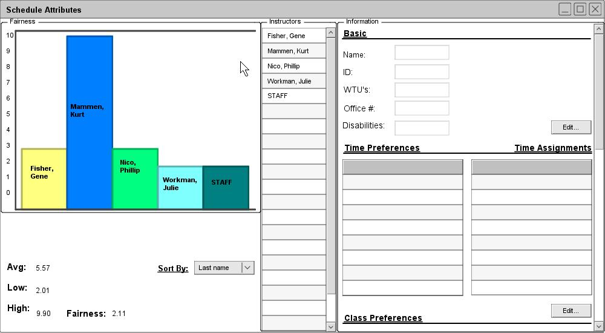
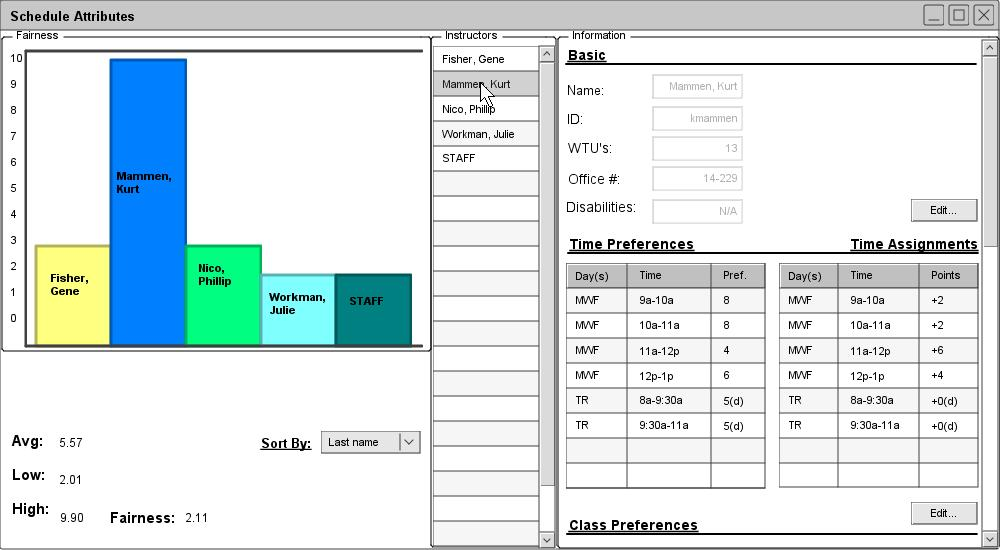
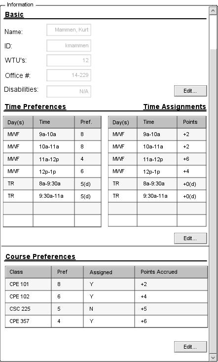
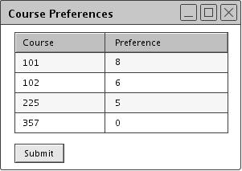
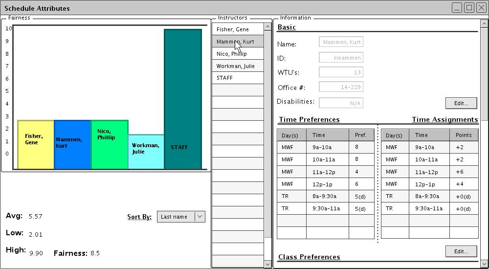

After generating a new schedule, an administrator can rate the schedule based on fairness. The term "fairness" concerns instructors whose preferences (times and courses) were used in generating the schedule. When an instructor's preference is not met exactly, a certain amount of points are assigned to that preference. As more of the instructor's preferences are violated, the points accrue and determine the instructor's overall fairness rating. Using this system, a lower score means the schedule is more fair towards the instructor.
During the process of generation, a "STAFF" instructor is available for use when no other instructor is available for selection. Similarly, a "TBA" location is used to fill any "holes" in a schedule where a room cannot immediately be provided. In the bar graph illustrated below in Figure X, the STAFF instructor's field is shown. The significance of this image will be detailed later.
Below, Figure 55 shows the initial dialogue for viewing schedule fairness.

Figure 55: Initial fairness window
The left-most, "Fairness" pane illustrates the schedule's fairness graphically. The value of each bar represents how unfair the scheduler was to a given professor. Ideally, the bar for each real professor should be relatively low and equal to that of his/her peers, while the bar for the "STAFF" worker should be higher (which would mean that STAFF was rarely used, and that all other professors were treated with relatively good fairness). Below the bar graph, several statistics are displayed which help to highlight important information. "Avg", "Low", and "High" give the corresponding values for the avaerage, lowest, and highest "unfairness" of the schedule (respectively). The "Fairness" field evaluates how "fair" a schedule was, and it determined by the difference between the "high" and "low" fields. Thus, the closer the lowest and highest values are, the more fair the schedule. (It should be noted that the "STAFF" field can make a schedule less fair, but never to make it more fair. In other words, higher-than-average values for STAFF will be inconsequential).
The "Sort By" field rearragnes the bar graph according to a given criteria (last name, ascending, descending, etc.).
It should be noted that the current schedule has given Kurt Mammen an unfair schedule. Resolving this issue is dealt with momentarily.
In the middle, "Instructors" pane, instructors can be selected in the scrollable list. When an instructor is selected, his corresponding information is displayed in the right-most, "Information" pane. Figure 56 illustrates the information displayed when Kurt Mammen is selected.

Figure 56: Fairness w/ Kurt Mammen selected
To better illustrate the information displayed for a professor, figure 57 shows the "Information" pane extended and by itself.

Figure 57: Kurt Mammen's information pane
A professor's basic information is displayed under the "Basic" heading. Such information as the professor's name, id, wtu's, office, and disability informaiton is displayed here. If an administrator wishes to change any of these settings, he may select the "Edit" button. For more information on editing, please refer to Section 2.3.1.2.
A professor's time preferences are displayed below the "Time Preferences" heading. The table displays any/all time preferences an instructor specified. For more information on adding time preferences, refer to Section 2.3.1.1. Next to this table, another table for "Time Assignments" is displayed. This table displays which time slots were actually assigned to a given professor. Thus, a comparison can be drawn between what a professor wanted and what he is given. Furthermore, instead of a "Pref." field in the Time Assignments table, a "Points" field is given. This represents how many points an instructor received for a given time slot.
For example, Kurt Mammen specified a preference of 8 (out of 10) for teaching on Mondays, Wednesdays, and Fridays from 9a.m. to 10a.m. The scheduler assigned him this time slot, and he was awarded only 2 points for it. Conversely, he also specified a preference of 4 for teaching Mondays, Wednesdays, and Fridays from 11a.m. to 12p.m. Since he was also assigned this time slot, he received an additional 6 points. It is in this way that the Scheduler Tool judges how fairly a professor's preferences are treated.
A professor's course preferences are displayed below the "Course Preferences" heading. For each course he specified, it is shown whether he was assigned that course or not ("Y" for yes, "N" for no), and how many points he received as a result. If an administrator wishes to change any of these preference, he may do so by selecting the appropriate "Edit" button. For more information on editing course preferences, please refer to Section 2.3.1.1.
In Kurt Mammen's example, the professor specified a preference of 8 (out of 10) for teaching CPE 101. He is given this course to teach, and thus was only given 2 points. Conversely, he also specified a preference of 4 for teaching CPE 357, but he was still assigned this class. As a result, he is awarded an additional 6 points. Furthermore, professor Mammen gave a preferene of 5 for teaching CSC 225, and he is not assigned it. He is given points 5 points for not teaching this class.
The STAFF instructor is given hard-coded preferences of "1" for all times and courses. This allows the Schedule Tool to select STAFF if needed, but only if no other possibilities present themselves. This also allows an administrator to interpret unfairness towards STAFF as a positive schedule attributes.
It should be noted that a "(d)" signifies a time/course preference which a professor did not specify, but which he was given. In Kurt Mammen's case, he did not specify a preference for teaching on Tuesday and Thursdays, from 8a.m. to 9:30a.m. and 9:30a.m. to 11a.m.. However, he was assigned these time slots. To accomodate for this, the Scheduler Tool ggives the professor a default preference of 5 (neutral), and does not reward the professor any points for that particular time slot.
Figure X illustrates an unfair schedule: Kurt Mammen is treated unfairly compared to his peers, and the STAFF instructor is treated quite fairly. (Ideally, this situation should be reversed: The only instructor to be treated unfairly should be STAFF). To remedy this situation, the Schedule Tool is designed to allow a privileged user to tweak instructors' time and course preferences. After this tweaking, a user regenerates a schedule, hopefully creating a schedule that is more fair. This process can be repeated as much as is needed, and is the recommended way to resolve scheduling problems. (The other method would be manual editing, but such a process is not as sure-fire as simple regeneration).
Below, Figure 58 illustrates changes that can be made to try and generate a better schedule.

Figure 58: Tweaking Kurt Mammen's course preferences
An administrator changes Kurt Mammen's preferences for CPE 357 to a lower value (from 4 to 0) and generates a new schedule. During generation, the Schedule Tool will act differently for a preference of 0, forcing it to avoid having Kurt Mammen teach CPE 357. (In particular, the Schedule Tool cannot give a class to a professor who has specified a preference of 0). The fairness of this newly-generated schedule is displayed below in Figure 59.

Figure 59: New, more fair schedule
This new schedule has not given Kurt Mammen CPE 357, and thus his point-count has down. His bar graph and the graph value for STAFF reflect this change: STAFF was given CPE 357, as no other viable solution could be made. Furthermore, the "Fairness" entry had increased from 5.11 to 8.5. Since all "real" instructors (those who aren't STAFF) have lower bar-graph values, and all these values are fairly equal, the schedule is more fair overall. Note that unfairness towards STAFF is ignored. However, a section for CPE 357 has no instructor. Since this is also an unnacceptable scenario, an administrator can go through further iterations of this tweaking and regenerating process until an acceptable solution is synthesized.